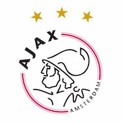
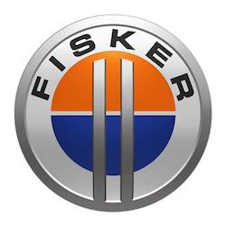

I'm an ambitious entrepreneur and want to learn more about coding to widen my horizon! With Le Wagon I think I can start to understand the more technical side of startups better. Currently I'm doing a Masters degree in Digital Entrepreneurship here in Barcelona as well. After the bootcamp I might search for a job as Junior Developer or work out my own StartUp ideas!
InceptionInception is a 2010 science fiction film written, co-produced, and directed by Christopher Nolan, and co-produced by Emma Thomas. The film stars Leonardo DiCaprio as a professional thief who steals information by infiltrating the subconscious, and is offered a chance to have his criminal history erased as payment for a seemingly impossible task: "inception", the implantation of another person's idea into a target's subconscious.. Inception is a must-watch movie for good movie lovers! |
|
|  |
AjaxAmsterdamsche Football Club Ajax also AFC Ajax, Ajax Amsterdam or simply Ajax, is a Dutch professional football club based in Amsterdam. Historically, Ajax (named after the legendary Greek hero) has been the most successful club in the Netherlands, with 33 Eredivisie titles and 18 KNVB Cups. |
|  |
FiskerFisker Automotive, now Fisker Inc., was a firm which made the Fisker Karma, which was one of the world's first production plug-in hybrid electric vehicles. It debuted at the 2008 North American International Auto Show, and first deliveries were in 2011. Production of the Fisker Karma was suspended in November 2012 due to bankruptcy of its battery supplier. |